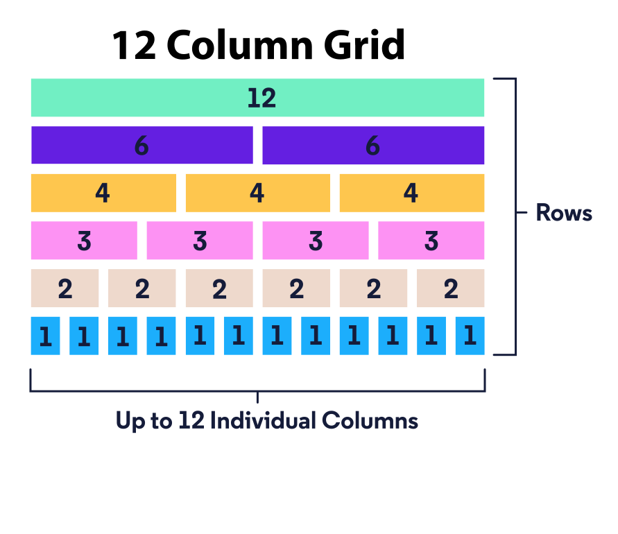

Bootstrap simplifies the layout of a website using a grid system. For us to fully take advantage of Bootstrap’s grid system, we need to understand how to structure our HTML.
At the heart of it, containers are the basis of Bootstrap’s grid. Inside containers, we nest rows as immediate children. Then, nested inside rows are columns. Inside columns, we put our actual content. Take a look below at an example of this nesting pattern. Don’t worry about the syntax of rows and columns just yet, but do take note of how our HTML is organized:
<div class="container">
<div class="row">
<div class="col">
<!-- A column inside a row inside a container! -->
</div>
</div>
</div>We can gain even more control of our layout once we start nesting rows inside columns and setting widths for our columns! But, first, let’s review how to create a layout using Bootstrap.
Bootstrap uses a grid system based on CSS Flexbox which organizes content in rows or columns. As seen in the previous exercise, Bootstrap also uses rows and columns and in this exercise we’ll learn about the essential Bootstrap container. Using the Bootstrap grid also allows for responsive design, in other words, a website’s layout can change based on the user’s screen size.
Bootstrap uses classes to apply CSS rulesets — these rulesets dictate the
layout and styling of the element. To create a container, necessary for
Bootstrap’s grid, we assign a class of "container" to a
<div> like so:
<div class="container"></div>
The <div> from the example above becomes a Bootstrap
container which has a width relative to a user’s screen size, becomes
horizontally centered, and has a left and right margin.
If we wanted the container to take up the entire width of the screen we
can assign a class of "container-fluid":
<div class="container-fluid"></div>Now that we have an understanding of how the layout works in Bootstrap and how to use containers, let’s focus our attention to rows.
As mentioned in the previous exercise, rows are nested within containers.
Also, we can add as many rows as we want inside a container. By default, a
row will take up the entire width of its parent container. To create a row
we assign a
class of "row" to an element. Take a look at the
provided example with a nested row inside a container:
<div class="container">
<div class="row">
</div>
</div>We’ve covered containers and rows, now we have to go one level deeper and explore Bootstrap’s columns.
Columns are the immediate children of rows and store content. By default, a column will take up the entire width of its parent row. As we add more columns inside a row, the default behavior is for each column’s width to be readjusted to fit in the row — each column will have the same width. A row is divided into 12 column units; if the columns’ widths add up to more than 12, the extra columns wrap onto a new line. Study the diagram below to see how column sizing works:

We can decide the width of a column by appending a hyphen and a number to the "col" class like so:
<div class="col-8">
<p>This is the width of 8 columns.</p>
</div>In our example, our row still has 4 columns worth of space. If we decide to add an adjacent column, we could also set our desired width like so:
<div class="row">
<div class="col-8">
<p>This is the width of 8 columns.</p>
</div>
<div class="col-4">
<p>This has the width of 4 columns.</p>
</div>
</div>
Another option we could use to set the width of a column is the content inside the column. If we want to use the content to set a column’s width, we append "auto" to the class of the column, for example:
<div class="col-auto">
<p>This content determines the width of the parent column</p>
</div>One benefit of using Bootstrap is that it incorporates responsive design. With responsive design, the layout of the content changes to accommodate a user’s screen size.
Bootstrap categorizes screen sizes into 5 categories or as breakpoints: extra small, small, medium, large, and extra large. Each breakpoint has a range measured in pixels. The range of these breakpoints and accompanying device types are marked in the following table:
| Category | Breakpoint Range | Device Type |
|---|---|---|
| Extra small | < 576 px |
portrait smartphones |
| Small | ≥ 576 px |
landscape smartphones |
| Medium | ≥ 768 px |
tablets |
| Large | ≥ 992 px |
desktops |
| Extra Large | ≥ 1200 px |
large desktop |
By using these breakpoints in combination with Bootstrap’s grid, we can customize the layout of our content for different screens.
Using Bootstrap, we can freely change the layout of our content using grid. We can even customize how our content on the grid changes based on breakpoints (extra small, small, medium, large, extra large). To incorporate these breakpoints into our code, we have to follow Bootstrap’s class naming convention.
The naming convention follows a pattern of
"col-{breakpoint}-{width}". Let’s break
this pattern down:
"col" refers to a column.{breakpoint} can be sm, md,
lg, or xl. Notice that there is no extra small
or xs breakpoint. If we omit {breakpoint}, it
is by default for extra small screens.
{width} can be set from 1 to
12 and assigns a width to the column.
{breakpoint}-{width}, it means that we want
our column to have that set width for screens that fit in the specified
breakpoint range and other larger screens.
For instance:
<div class="col-sm-8">
</div>It is also possible to combine multiple bootstrap classes to accomodate for all screen sizes. The tag below is going to ensure that
"col-12". We don’t include an xs breakpoint, it’s
implicitly applied for us!
col-md-8 ensures that width will be set to 8 on mediun
sized screens
col-xl-6
<div class="col-12 col-md-8 col-xl-6">
</div>
The breakpoints cover the ranges upward from the particular breakpoint.
Lets loo at the code below:
<div class="container">
<div class="row">
<div class="col-12 col-sm-7 col-lg-5">
</div>
</div>
</div>In addition to useful utility classes, Bootstrap offers a collection of components, such as a navbar, buttons, a carousel/slideshow for images, and much more! Each Bootstrap component serves a distinct purpose and we can find examples and code snippets directly from the documentation — then, we can tweak the components to our personal needs.
The first component we’ll investigate is the navigation (nav) component which offers our users a collection of links. The nav component is slightly different from a navbar component. The nav component is often specific to one or a few webpages, whereas a navbar often appears on all the pages of a website.
There are many ways to create a basic nav component. Here’s one example:
<ul class="nav">
<li class="nav-item">
<a class="nav-link" href="#">First Link</a>
</li>
<li class="nav-item">
<a class="nav-link" href="#">Second Link</a>
</li>
</ul>In the above example:
<ul> that
has a class of "nav".
<ul> has nested <li> elements
which each have a class of "nav-item".
<li> is an <a> which
has a class of "nav-link".
Another common component we see on websites are buttons. Buttons represent a clickable object that does something else in return like navigating to a different page, submitting a form, or opening a popup, just to name a few.
By default, the <button> element doesn’t have much
styling. But, with Bootstrap we can make button components that have more
styling. Here’s an example from Bootstrap’s button documentation:
<button type="button" class="btn btn-danger">Danger</button>
The example above will render a red button that has the text
Danger inside the button:
type of "button"."btn" and "btn-danger".
"btn" class provides Bootstrap’s default button
styling.
"btn-danger" turns the button red and conveys the
purpose of the button, i.e. clicking this button might not be safe!
Bootstrap also allows us to quickly add interactivity to a webpage. One way to include interactivity is to toggle the visibility of an element.
To add such a feature, we need two elements and a few attributes — one element with content and another element that switches the visibility of the previous element. For example:
<button class="btn btn-primary" type="button" data-toggle="collapse" data-target="#collapseExample" aria-expanded="false" aria-controls="collapseExample">
This button controls the following div's visibility.
</button>
<div class="collapse" id="collapseExample">
<p>This content's visibility gets toggled</p>
</div>
In the example above, we have a <button> element that
toggles the visibility of the <div> element below it.
The button has an attribute data-toggle="collapse" which
enables button’s toggle ability. Another attribute,
data-target="#collapseExample", means that this button
toggles the visibility of the element with the id of
"collapseExample". The aria-expanded and
aria-controls attributes are information for screen readers
and other accessibility means.
Focusing our attention on the <div> below the button,
notice that it has a class of "collapse", which hides the
content when the webpage initially renders. Our
<div> also has an id of
"collapseExample" which corresponds to the value of the
button’s data-target.
<nav class="navbar navbar-expand-lg navbar-light bg-light">
<a class="navbar-brand" href="#">Brand Goes Here</a>
<button class="navbar-toggler" type="button" data-toggle="collapse" data-target="#navbarSupportedContent"
aria-controls="navbarSupportedContent" aria-expanded="false" aria-label="Toggle navigation">
<span class="navbar-toggler-icon"></span>
</button>
<div class="collapse navbar-collapse" id="navbarSupportedContent">
<ul class="navbar-nav">
<li class="nav-item active">
<a class="nav-link" href="#">Current Page Link <span class="sr-only">(current)</span></a>
</li>
<li class="nav-item">
<a class="nav-link" href="#">Another Page Link</a>
</li>
</ul>
</div>
</nav>There’s a lot going on, so let’s break it down before we use it in our own code:
<nav> element with multiple classes:
"navbar" makes this <nav> a
Bootstrap navbar.
"navbar-expand-lg" renders the
<div class="collapse navbar-collapse"> element on
large (and extra large screens). The "lg" portion is
called a breakpoint and refers to screen size widths. We
can append one of any breakpoint value at the end, i.e.
"sm", "md", "lg", or
"xl".
"navbar-light" assigns a color scheme to the navbar.
"bg-light" assigns a background color to the navbar.
<nav> is an <a> with a
class of "navbar-brand" which can be an image or text that
represents the brand/logo of the website.
<button> that renders when a user’s screen
size is smaller than the breakpoint value in
"navbar-expand-{breakpoint}" and toggles the visibility of
the navbar menu to save space.
<div>, with the nav component and its links, renders
instead of the button.
In arenas and stadiums, there are giant screens called jumbotrons which display the main event for everyone in the crowd to see. Bootstrap also offers a jumbotron component that serves a similar function and makes content stand out.
Here’s an example of a basic jumbotron that only contains text:
<div class="jumbotron">
<h1>Wow this stands out!</h1>
</div>Bootstrap also has a card component that serves as a container for smaller customized content. Card components are often grouped together to display a collection of similar content in manageable chunks. We can draw a comparison of the card component to playing cards in deck — in both cases, there are cards grouped together and each one contains something different.
<div class="card">
<img class="card-img-top" src="placeholder.jpg" alt="card example image">
<div class="card-body">
<h5 class="card-title">Card title</h5>
<p class="card-text">Card description goes here.</p>
<a href="#" class="card-link">Link to somewhere.</a>
</div>
</div>
"card" to an element.
<img> and a <div> element.
<img> has a class of
"card-img-top" which adds styling and formatting to the
image.
<div> has a class of
"card-body" which adds a section with default padding.
"card-{value}" which adds styling to these elements
specific for Bootstrap cards.
There are times that we want to showcase a group of images but not want to have our users scroll through one picture on top of another. Instead, we could fit our images into a slideshow using Bootstrap’s carousel component.
<div id="carouselExampleSlidesOnly" class="carousel slide" data-ride="carousel">
<div class="carousel-inner">
<div class="carousel-item active">
<img class="d-block w-100" src="example_slide_1.png" alt="First slide">
</div>
<div class="carousel-item">
<img class="d-block w-100" src="example_slide_2.png" alt="Second slide">
</div>
</div>
</div>
The example above will render a slideshow that loops through two images, displaying one at a time. In the actual code:
<div> element has an id of
"carouselExampleSlidesOnly", two classes
"carousel" and "slide", and the attribute
data-ride="carousel".
id is used later when we want to add controls to
click between slides.
data-ride attribute provides the interactivity and
slide transitions.
<div class="carousel-inner"> element that contains
other <div> elements with images.
<div> is yet another
<div> with a class of
"carousel-item" and "active" (only one image
needs the active class, if none have active, no images are shown).
<div> with .carousel-item has a
nested <img> element which have the usual
src and alt attributes.
<img> elements use two utility classes
"d-block" sets its display as block and the
"w-100" is to take up 100% of the width.